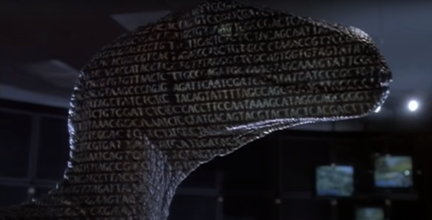
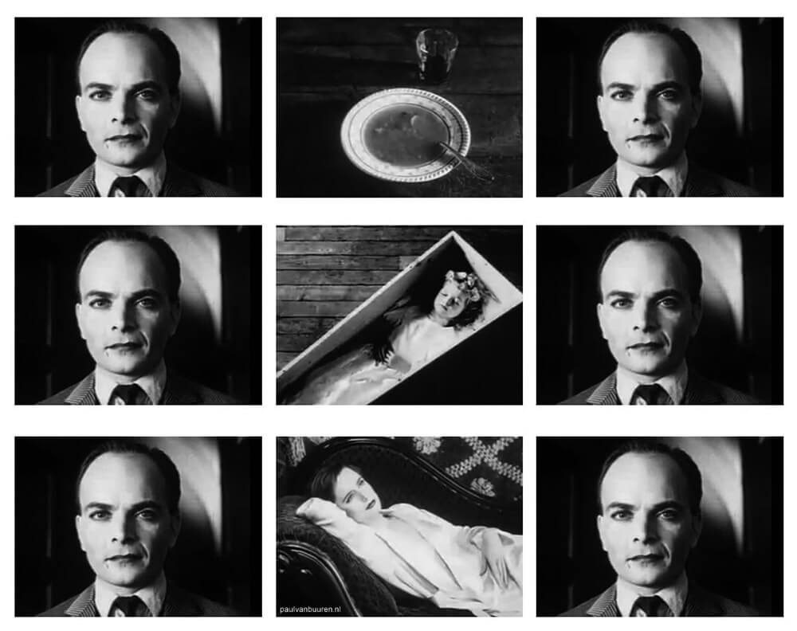

| Title | Director | Year Released |
|---|---|---|
| Jurassic Park | Steven Spielberg | 1993 |
| The Godfather | Francis Ford Coppola | 1972 |
Making a movie is hard. Making a good movie is even harder. You can break down what a movie is into a bunch of separate categories, like acting, photography, set design, sound design, scoring, and so on and so forth.
For example, think about this scene from Jurassic Park, where the T-Rex battles the raptors. I want you to watch it (it's only three minutes) and come back.
As in any movie, there's a lot of things going on in this scene, even right from the beginning. Think about it: there's lighting, acting, set design, photography. These are all aspects of what is called the mis-en-scène. In French it means "placing on stage," and its a term used in movies to talk about the arrangement of things and people that you can see on the screen.
So think about this scene as a combination of all of those things that you can see on-screen, and suddenly movies become a lot more complicated than you would probably think. Suddenly Spielberg's job doesn't seem so easy now.
Take a look at this shot, for instance:
Like any good director, Spielberg and editor Michael Kahn selected this shot to work with, as well as all the other shots in this scene, for a reason. We might not know exactly why they chose these shots, and of course we can always examine this scene in conjuncting with other scenes in the film to determine meaning, but we do know that they chose to arrange all of these shots in a particular way that another team might not have. Needless to say, determing the "correct" order to place these shots is a difficult process.
This process, as you well may know, is called editing, and it fundamentally shapes what kind of movie you're watching. What if Jurassic Park had been a comedy? What if Spielberg and Kahn had placed the shots in a different order, maybe even used different lighting, music, and acting for the scene? What if someone else entirely had edited the movie? It might have been a worse movie, of course, but that just shows you how important the art of editing is.
At its most basic level, editing is the act of "cutting" film footage. This process used to be a physical process. That's because films used to be shot on actual film, a product made of cullulose nitrate or cellulose acetate, different forms of plant, animal, and mineral material. This required a director and an editor to work together "splicing" the footage. It required that the footage be "cut" away to create the film. Nowadays, film is shot primarily on digital cameras, where the footage is stored on hard drives or solid-state drives as data. This data is then imported into programs like Da Vinci Resolve, Final Cut Pro, and Adobe Premiere Pro. As a result, the editing process has become more finely tuned. (But not necessarily better!)
However, it's important to think about the history of editing, too. It's changed a lot since the early days of filmmaking, where the process was expensive, considered a gimmick, and because film tended to catch on fire, dangerous!
Montage is a film editing technique that compresses the length of shots by cutting and splicing them together. Typically, a montage may compress a film’s time and space, create continuity within the film’s narrative, or construct meaning in the film through juxtaposition or conflict. D. W. Griffith, an American director famous for The Birth of a Nation (1915) and Intolerance (1916), popularized the use of “continuity editing,” in which shots of different scenes are cut to appear onscreen as a simultaneous sequence. Partially inspired by Griffith’s films, Soviet filmmakers from the 1910s to the 1940s experimented with montage techniques to create a method of cutting known as “discontinuity editing.” In discontinuity editing, shots are cut and assembled to create an effect through the construction and juxtaposition of different representational shots.
In 1919, the Bolsheviks founded the world’s first film school, the VGIK. Located in Moscow, directors such as Sergei Eisenstein and Vsevolod Pudovkin would attend the VGIK and study (though briefly) under film theorist Lev Kuleshov, a pioneer in what would later be called “Soviet montage theory.” Early influences in Soviet montage theory include the Kuleshov effect. The Kuleshov effect is a phenomenon that suggests that two shots of different content and meaning can create new meaning when placed beside each other. In an interview with Francois Truffaut, Alfred Hitchcock noted his use of the Kuleshov effect in Rear Window (1954).
Vsevolod Pudovkin described two ways of editing a film: structural editing and relational editing. Structural editing is the process of revealing to the viewer connected elements of a film’s structure (scenes, sequences, scenarios) one by one. Relational editing is the process of providing “psychological guidance” for the viewer so that it leaves an “impression” on them. Pudovkin described five methods of relational editing: contrast, parallelism, symbolism, simultaneity, and leitmotif. In a contrast relation, two sequences occur alongside each other, and the viewer notices the differences between the two. Alternatively, in a parallel relation, the viewer notices the similarities between the two. In a symbolic relation, one sequence symbolizes another, while in a simultaneous relation, two sequences that are dependent on the other occur at the same time. Finally, in a leitmotif relation, a shot is repeated in several sequences to reiterate a specific theme. Each of these methods of editing relies on montage, which Pudovkin refers to as “constructive editing," wherein shots are assembled on top of each other like bricks.
Eisenstein disagreed with Pudovkin’s assertion that montage is “constructive editing.” Instead, referencing the Marxist theory of dialectical materialism, Eisenstein argued that “all art is conflict."" He wrote, “Montage is not an idea composed of successive shots stuck together but an idea that [derives] from the collision between two shots that are independent of one on another." Eisenstein would demonstrate his theory of montage most famously in the “Odessa steps” sequence from Battleship Potemkin (1925). Eisenstein wrote about five methods of montage: metric montage, rhythmic montage, tonal montage, overtonal montage, and intellectual montage. In a metric montage, cuts are made based on the length of the shots without regard to their content. In a rhythmic montage, cuts are made based on both the length of the shots as well as the content of the shots. In a tonal montage, cuts are made based on the dominant tones of the shots and how those shots produce emotion. In an overtonal montage, cuts are made based not only on the dominant tone of the shot but other “colliding” tones as well. In an intellectual montage, cuts are made based on the collision of overtones that produce “intellectual affects” in the viewer.
Sergei Eisenstein’s theory of intellectual montage is the culmination of all four of his other theoretical methods of montage (metric, rhythmic, tonal, and overtonal), it is montage, as Eisenstein writes, “not of generally physiological overtonal sounds, but of sounds and overtones of an intellectual sort: i.e., conflict-juxtaposition of accompanying intellectual sounds." Through “conflict-juxtaposition” and the “intellectual” collision of “sounds,” a reference to Eisenstein’s conception of montage as a dialectic, a filmmaker synthesizes ideas.
Likewise, the baptism montage in Francis Ford Coppola’s The Godfather (1972) is a culmination of dialectical proportions, a last-ditch effort to grab control of the New York Mob’s interconnected system of material wealth: while Michael Corleone (Al Pacino) attends his godchild’s baptism, other members of the Corleone Family assassinate leaders of the New York Mob, creating a power vacuum that effectively crowns Michael its de fact leader.
The baptism montage, which you can find here, is notable for many of the reasons the film itself is notable: namely, for its sophisticated depiction of moral perversion; its interweaving of the religious, the traditional, and the violent—the corrupt; and its slow descent into depravity, which the film disguises as high-class civility. Though traditional Hollywood cinema viewed montage as merely “creative editing” (or less cynically, as a way to save money), this sequence in The Godfather utilizes montage in a way that breaks from that tradition and honors one of the method’s innovators, Eisenstein, by synthesizing the film’s themes through an intellectual use of juxtaposition and overtonal collision.
The scene’s establishing shot introduces several dominant tones that are prevalent throughout the baptism sequence that will, slowly, begin to blend with the juxtaposing images of the other sequences. Chiaroscuro pillars bathed in darkness interpolate the stained-glass windows and lights, which bathe the rest of the shot in golden light. The scene cuts in closer to the baptism, officiated by a priest and a Cardinal. The Cardinal’s uniform and the the priest’s stole (as well as the flowers beside him), both blood red, stand out against the golden interior of the cathedral. As the baptism begins, the camera shows Michael in a medium shot, looking off-camera (presumably toward the Church officials). In this medium shot, the windows divide Michael’s face into halves of heavenly, golden light and brooding shadow. While the priest blesses the child, the film cuts from Michael’s godchild to the Family’s capos and henchmen preparing themselves for their assassinations.
Then, The Godfather makes its first intellectual cut, located between two shots that are ostensibly different, but which the film implies are essentially the same. as the priest begins to bless the baby, placing his fingers to the baby’s lips, the film cuts to a barber, who begins to shave one of the Family’s targets, gathering shaving cream in his hand and lathering it on the target’s face. Cut back to the priest, repeating the same action from earlier, then cut to a man dressed as a police officer, emptying a pistol and a police officer badge out of a paper bag. He wipes his face, and the scene cuts to a large man walking up spiraled stairs, also wiping his face.
The priest then asks, “Michael, do you believe in God, the Father Almighty, the creator of heaven and Earth?” Michael responds, “I do,” and the scene cuts back to the assassins as they get in place to intercept their targets, while offscreen the voice of the priest continues speaking to Michael. Two assassins begin walking up more stairs. In these shots, the interior resembles and mirrors, remarkably, the interior of the cathedral, covered in an elegant golden luxuriousness—which will contrast with the blood that these two men will eventually shed.
As the priest asks Michael, “Do you renounce Satan?” the organ music swells—whether it occurs diagetically is not clear—as one assassin fires two shotgun shells into two men exiting an elevator. The resulting echoes from the shots bounce as though it were happening in the cathedral. Another, receiving a massage, puts on his glasses in time for him to see his shooter, who fires a bullet through his right eye, cracking his lens. The blood streams from his eye rapidly but not violently—gently, like the blood-red stole the priest extends over the blessed infant. The camera denies the viewer the massaged man’s point of view, but with the next victim, whose assassin locks him inside a revolving door, the camera turns around toward the assassin, who menaces, devilishly, as he fired rounds and glass cracks. Two assassins machine-gun two lovers in bed, as the disguised police assassin guns down three men outside a flight of steps.
The capstone to this entire montage, where the film’s themes are most blatant yet nonetheless intriguing, is the metric cutting that occurs after the priest pours holy water over the now-baptized infant, as shots of the assassinated Mob leaders appear onscreen, layered with the ghoulish haunts of the accompanying organ. “Michael Rizzi, go in peace, and may the Lord be with,” the priest says. Ending the montage with shots of the dead bodies engenders a sense of commonality, undoubtedly, between the two events. This commonality, though by no means obvious, suggests something interesting: by assassinating all other heads of rival Families, Michael, through his own will, has baptized his godchild in the blood of his enemies—even Michael’s godchild, though now baptized, has been irreversibly marked with his godfather’s sins.
Within the context of the film’s narrative, this montage is a sucker-punch precisely because it congeals and interpolates sophisticated ideas about religion, morality, and cultural into a single five-minute sequence without being ham-fisted or blunt. Michael’s eyes guide us through his soul, which the priest unknowingly interrogates and which the film exposes as corrupt and superficial, covered in blood.
If you want to read more about Soviet Montage Theory as well as editing in general, I would suggest:
Sergie Eisenstein. Film Form: Essays in Film Theory, 1949. Read it on the Internet Archive here.
Vsevolod Pudovkin. Film Technique and Film Acting, 1954. Read it on the Internet Archive here.
Charlie Keil and Kristen Whissel. Editing and Special/Visual Effects. Rutgers University Press, 2016.